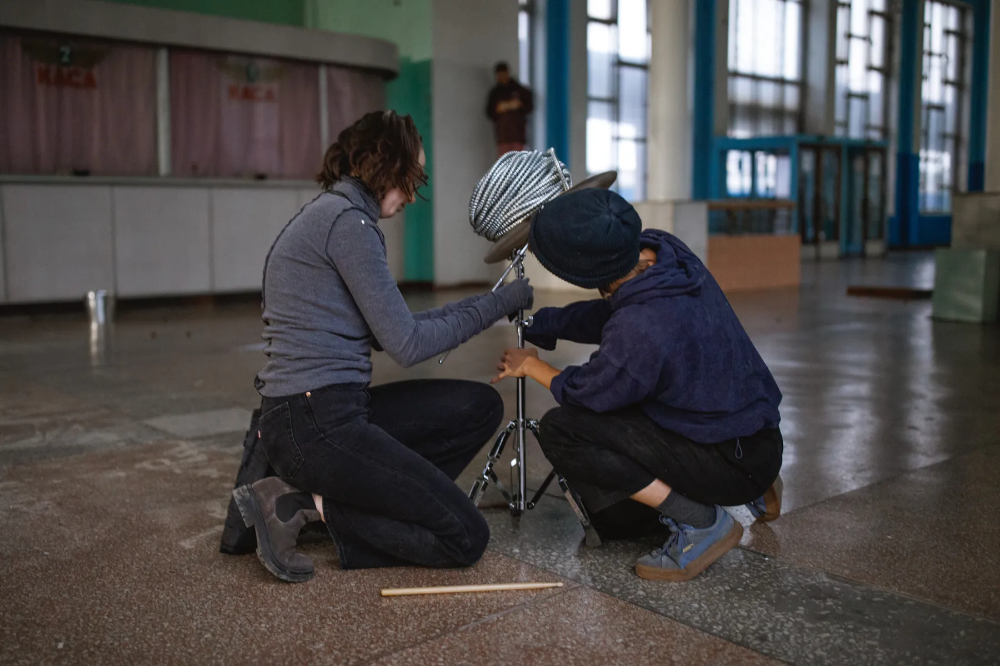
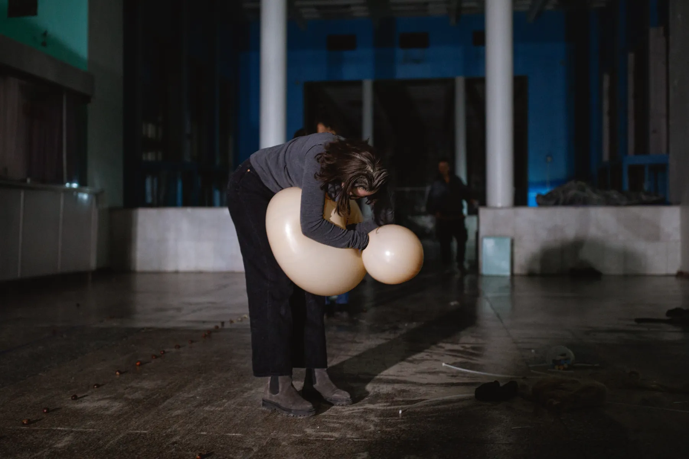
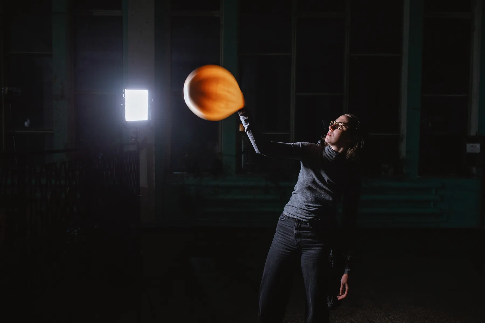
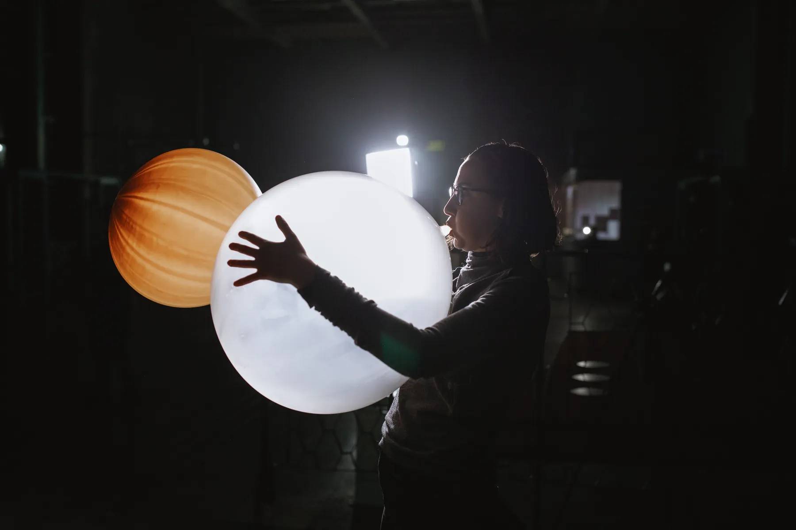

2021 / Міжнародний проєкт
CROSSING 2.0
Колективний перформативний проєкт про перехід, дистанцію та взаємну присутність. Повітряні об’єкти стають нестабільними партнерами тіла, змінюючи баланс між контролем, турботою та опором.


